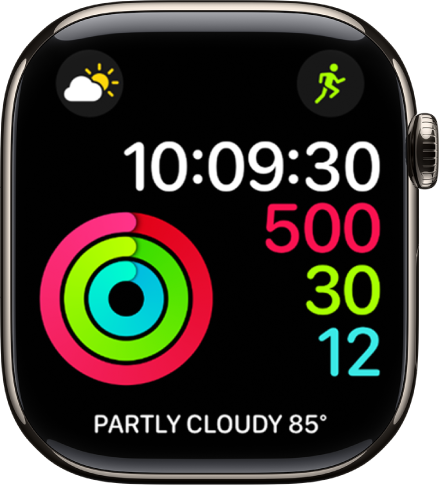

此表盘以统一的大字体显示数码格式的时间和你的健身记录进度。
下方的文件数包括本地化资源。固件名称键能确认包的归属；组件的圆屏点击边界、亮屏过渡与 AOD 对照均待设备验证。
NTKActivityFaceBundle.bundle共用此包的条目有 健身记录指针、健身记录数字。下方资源按包列出，具体款式需结合名称键和调用路径。
FACE_STYLE_ACTIVITY_ANALOG_ROLL_DESCRIPTIONFACE_STYLE_ACTIVITY_DIGITAL_STAND_DESCRIPTIONFACE_STYLE_ACTIVITY_ANALOG_STAND_DESCRIPTIONFACE_STYLE_ACTIVITY_DIGITAL_ROLL_DESCRIPTIONEDIT_OPTION_LABEL_ANALOG_DENSITY_SUBDIALSEDIT_OPTION_LABEL_ANALOG_DENSITY_RINGS色组与设备条件 Activity.color.plist 共享色组与默认值
-[NTKActivityAnalogFaceView tritium_createFaceAnimator];-[NTKActivityAnalogFaceView _prepareWristRaiseAnimation];-[NTKActivityAnalogFaceView tritium_prepareForActiveStateBurnInStudyWithDisplayDate:];-[NTKActivityAnalogFaceView _performWristRaiseAnimation];-[NTKActivityAnalogFaceView tritium_prepareForInactiveStateBurnInStudy];-[NTKActivityDialSegment setTritiumOnWithProgress:];-[NTKActivityDialView setTritiumOnWithProgress:];-[NTKActivityDigitalFaceView tritium_didTransitionToTritiumOff];-[NTKActivityDigitalFaceView tritium_createFaceAnimator];-[NTKActivityDigitalFaceView _createTritiumLabelsIfNeeded];-[NTKActivityDigitalFaceView tritium_alwaysOnTimelines];-[NTKActivityDigitalFaceView _removeTritiumLabels];-[NTKActivityDigitalFaceView _prepareWristRaiseAnimation];-[NTKActivityDigitalFaceView tritium_prepareForActiveStateBurnInStudyWithDisplayDate:];-[NTKActivityDigitalFaceView lpr_validateDigitLocationsBeforeTritiumTransition];-[NTKActivityDigitalFaceView _performWristRaiseAnimation];-[NTKActivityDigitalFaceView tritium_shouldApplyOverrideDate];-[NTKActivityDigitalFaceView tritium_prepareForInactiveStateBurnInStudy];-[NTKActivityDigitalFaceView tritium_willTransitionToTritiumOnToFrameSpecifier:];-[NTKActivityFaceViewFactoryDelegate applyDataModel:animated:];-[NTKActivityAnalogFaceView applyDataModel:animated:];-[NTKActivityAnalogFaceView _applyTransitionFraction:fromOption:toOption:forCustomEditMode:slot:];-[NTKActivityAnalogFaceView tritium_createFaceAnimator];-[NTKActivityAnalogFaceView _setActivityViewsAlpha:includeDateComplication:animated:];-[NTKActivityAnalogFaceView _applyCurrentDataModelAnimated:];-[NTKActivityAnalogFaceView _applyCurrentDataModelByFraction:updateLabels:animated:];-[NTKActivityAnalogFaceView _applyDataModel:byFraction:updateLabels:ignoreScreenBlanked:animated:];-[NTKActivityAnalogFaceView _prepareWristRaiseAnimation];-[NTKActivityAnalogFaceView ntkRingsQuadDelegate_didStopAnimating];-[NTKActivityAnalogFaceView screenWillTurnOnAnimated:];-[NTKActivityAnalogFaceView _performWristRaiseAnimation];-[NTKActivityAnalogFaceView ntkRingsQuadDelegate_willStartAnimating];-[NTKActivityAnalogFaceView _configureForTransitionFraction:fromEditMode:toEditMode:];-[NTKActivityAnalogFaceView screenDidTurnOffAnimated:];-[NTKActivityAnalogRichFaceView _applyTransitionFraction:fromOption:toOption:forCustomEditMode:slot:];-[NTKActivityDialSegment setTickLayer:];-[NTKActivityDialSegment setTickScale:];-[NTKActivityDialSegment tickRotation];-[NTKActivityDialSegment tickScale];-[NTKActivityDialSegment tickLayer];-[NTKActivityDialSegment setTickRotation:];-[NTKActivityDialView applyTransitionFromScheme:toScheme:fraction:];+[NTKActivityDigitalFace _customEditModeIsShowSeconds:forDevice:];-[NTKActivityDigitalFaceView setShowSeconds:];-[NTKActivityDigitalFaceView _applyDataModel:byFraction:updateLabels:animated:];-[NTKActivityDigitalFaceView applyDataModel:animated:];-[NTKActivityDigitalFaceView tritium_didTransitionToTritiumOff];-[NTKActivityDigitalFaceView _setActivityViewsAlpha:animated:];-[NTKActivityDigitalFaceView _applyTransitionFraction:fromOption:toOption:forCustomEditMode:slot:];-[NTKActivityDigitalFaceView tritium_createFaceAnimator];-[NTKActivityDigitalFaceView tritium_alwaysOnTimelines];-[NTKActivityDigitalFaceView _blinkerAndSecondsWidth];-[NTKActivityDigitalFaceView _applyCurrentDataModelByFraction:updateLabels:animated:];-[NTKActivityDigitalFaceView _prepareWristRaiseAnimation];-[NTKActivityDigitalFaceView ntkRingsQuadDelegate_didStopAnimating];-[NTKActivityDigitalFaceView _updateTimeViewSecondsDisplayState];-[NTKActivityDigitalFaceView screenWillTurnOnAnimated:];-[NTKActivityDigitalFaceView lpr_validateDigitLocationsBeforeTritiumTransition];-[NTKActivityDigitalFaceView timeTravelDateEnteredOrExitedTimelineBounds:];-[NTKActivityDigitalFaceView _performWristRaiseAnimation];-[NTKActivityDigitalFaceView ntkRingsQuadDelegate_willStartAnimating];-[NTKActivityDigitalFaceView showSeconds];-[NTKActivityDigitalFaceView _configureForTransitionFraction:fromEditMode:toEditMode:];-[NTKActivityDigitalFaceView setOverrideDate:duration:];-[NTKActivityDigitalFaceView tritium_willTransitionToTritiumOnToFrameSpecifier:];-[NTKActivityDigitalFaceView screenDidTurnOffAnimated:];-[NTKActivityFaceViewFactoryDelegate frozenTextLayoutStylesBySlot];-[NTKActivityFaceViewFactoryDelegate textLayoutStyleForSlot:];+[NTKActivityAnalogFace _faceClassOfFaceWithRichComplicationSlotsForDevice:];+[NTKActivityAnalogFace _complicationSlotDescriptors];+[NTKActivityAnalogFace _orderedComplicationSlots];+[NTKActivityAnalogFace richComplicationSlotsForDevice:];-[NTKActivityAnalogFace applyPreviewConfigurationWithFamily:faceColor:];-[NTKActivityAnalogFace _numberOfOptionsForCustomEditMode:slot:];-[NTKActivityAnalogFace _defaultOptionForCustomEditMode:slot:];-[NTKActivityAnalogFace _indexOfOption:forCustomEditMode:slot:];-[NTKActivityAnalogFace _optionAtIndex:forCustomEditMode:slot:];-[NTKActivityAnalogFaceView _keylineCornerRadiusForComplicationSlot:];-[NTKActivityAnalogFaceView _applyTransitionFraction:fromOption:toOption:forCustomEditMode:slot:];-[NTKActivityAnalogFaceView layoutSubviews];-[NTKActivityAnalogFaceView _applyBreathingFraction:forCustomEditMode:slot:];-[NTKActivityAnalogFaceView _layoutStyleForSlot:];-[NTKActivityAnalogFaceView _applyOption:forCustomEditMode:slot:];-[NTKActivityAnalogFaceView _prepareForEditing];-[NTKActivityAnalogFaceView frozenTextLayoutStylesBySlot];-[NTKActivityAnalogFaceView _cleanupAfterEditing];-[NTKActivityAnalogFaceView _keylineViewForCustomEditMode:slot:];-[NTKActivityAnalogFaceView _curvedComplicationCircleRadius:centerAngle:maxAngularWidth:circleCenter:interior:forSlot:];-[NTKActivityAnalogFaceView _setActivityViewsAlpha:includeDateComplication:animated:];-[NTKActivityAnalogFaceView _keylineStyleForComplicationSlot:];-[NTKActivityAnalogFaceView _fadesComplicationSlot:inEditMode:];-[NTKActivityAnalogFaceView _accentColorForFaceColor:];-[NTKActivityAnalogFaceView _keylineLabelAlignmentForCustomEditMode:slot:];-[NTKActivityAnalogFaceView _newLegacyViewForComplication:family:slot:];-[NTKActivityAnalogFaceView _relativeKeylineFrameForCustomEditMode:slot:];-[NTKActivityAnalogFaceView _cachedSchemeForFaceColorPalette:];-[NTKActivityAnalogFaceView _dateComplicationPressed:];-[NTKActivityAnalogFaceView _updateActivityLabelColors:];-[NTKActivityAnalogFaceView textLayoutStyleForSlot:];-[NTKActivityAnalogFaceView _applyRubberBandingFraction:forCustomEditMode:slot:];+[NTKActivityAnalogRichFace _complicationSlotDescriptors];+[NTKActivityAnalogRichFace _richComplicationSlotsForDevice:];-[NTKActivityAnalogRichFace complicationsColorRenderingUsage];-[NTKActivityAnalogRichFaceView _applyTransitionFraction:fromOption:toOption:forCustomEditMode:slot:];-[NTKActivityAnalogRichFaceView _applyOption:forCustomEditMode:slot:];-[NTKActivityAnalogRichFaceView _fadesComplicationSlot:inEditMode:];-[NTKActivityAnalogRichFaceView _configureComplicationView:forSlot:];-[NTKActivityAnalogRichFaceView _keylineFrameForComplicationSlot:selected:];-[NTKActivityAnalogRichFaceView fadeComplicationSlot:entry:exit:fraction:fromPalette:toPalette:];-[NTKActivityDateComplicationLabel _cornerRadius];-[NTKActivityDateComplicationLabel _highlightInset];-[NTKActivityDialSegment colorScheme];-[NTKActivityDialSegment setColorScheme:];-[NTKActivityDialSegment initWithHourIndex:LayoutConstants:dialRadius:device:];-[NTKActivityDialView colorScheme];-[NTKActivityDialView setColorScheme:];+[NTKActivityDigitalFace _faceClassOfFaceWithRichComplicationSlotsForDevice:];+[NTKActivityDigitalFace _complicationSlotDescriptors];+[NTKActivityDigitalFace _orderedComplicationSlots];-[NTKActivityDigitalFace _numberOfOptionsForCustomEditMode:slot:];-[NTKActivityDigitalFace _defaultOptionForCustomEditMode:slot:];-[NTKActivityDigitalFace _indexOfOption:forCustomEditMode:slot:];-[NTKActivityDigitalFace _optionAtIndex:forCustomEditMode:slot:];-[NTKActivityDigitalFaceView _applyTransitionFraction:fromOption:toOption:forCustomEditMode:slot:];-[NTKActivityDigitalFaceView layoutSubviews];-[NTKActivityDigitalFaceView _applyBreathingFraction:forCustomEditMode:slot:];-[NTKActivityDigitalFaceView _applyOption:forCustomEditMode:slot:];-[NTKActivityDigitalFaceView _prepareForEditing];-[NTKActivityDigitalFaceView _cleanupAfterEditing];-[NTKActivityDigitalFaceView _layoutForegroundContainerView];-[NTKActivityDigitalFaceView _keylineViewForCustomEditMode:slot:];-[NTKActivityDigitalFaceView _configureForDetailEditing];-[NTKActivityDigitalFaceView galleryFaceColorPalette];-[NTKActivityDigitalFaceView _cleanUpAfterDetailEditing];-[NTKActivityDigitalFaceView _keylineStyleForComplicationSlot:];-[NTKActivityDigitalFaceView _fadesComplicationSlot:inEditMode:];-[NTKActivityDigitalFaceView _swatchColorForColorOption:];-[NTKActivityDigitalFaceView _applyCurrentRingLayout];-[NTKActivityDigitalFaceView _updateCurrentRingLayoutIfNecessary];-[NTKActivityDigitalFaceView _keylineLabelAlignmentForCustomEditMode:slot:];-[NTKActivityDigitalFaceView _relativeKeylineFrameForCustomEditMode:slot:];-[NTKActivityDigitalFaceView _ringCenterForLayout:];-[NTKActivityDigitalFaceView _layoutConstants];-[NTKActivityDigitalFaceView layoutConfigurationForSlot:];-[NTKActivityDigitalFaceView _updateActivityLabelColors:];-[NTKActivityDigitalFaceView textLayoutStyleForSlot:];-[NTKActivityDigitalFaceView _applyRubberBandingFraction:forCustomEditMode:slot:];-[NTKActivityDigitalFaceView _complicationPickerStyleForSlot:];+[NTKActivityDigitalRichFace _complicationSlotDescriptors];+[NTKActivityDigitalRichFace _richComplicationSlotsForDevice:];-[NTKActivityDigitalRichFace complicationsColorRenderingUsage];-[NTKActivityDigitalRichFaceView _configureComplicationView:forSlot:];-[NTKActivityDigitalRichFaceView _layoutConstants];-[NTKActivityDigitalRichFaceView _keylineFrameForComplicationSlot:selected:];